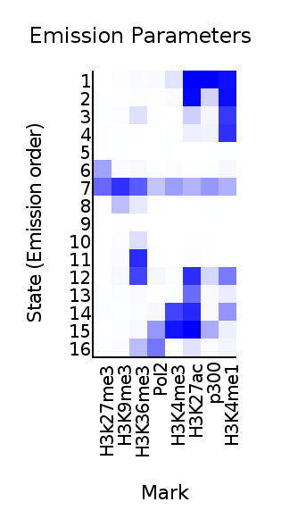
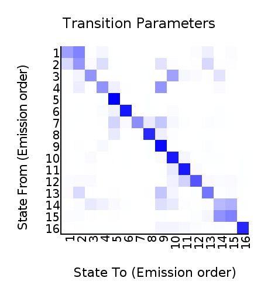
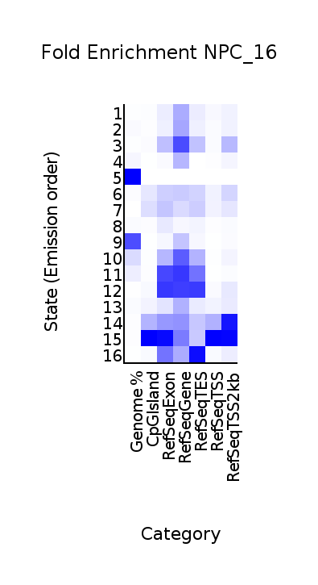
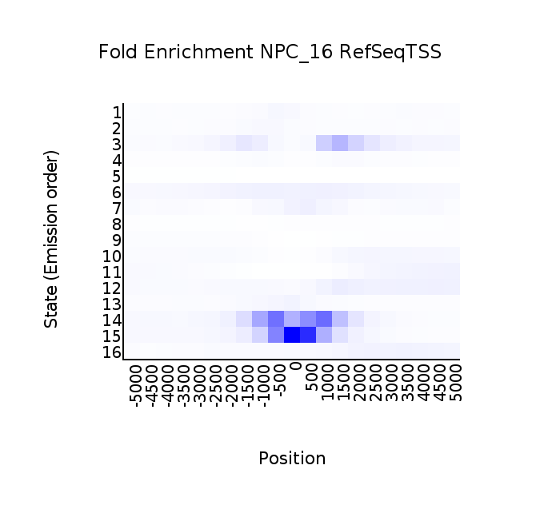
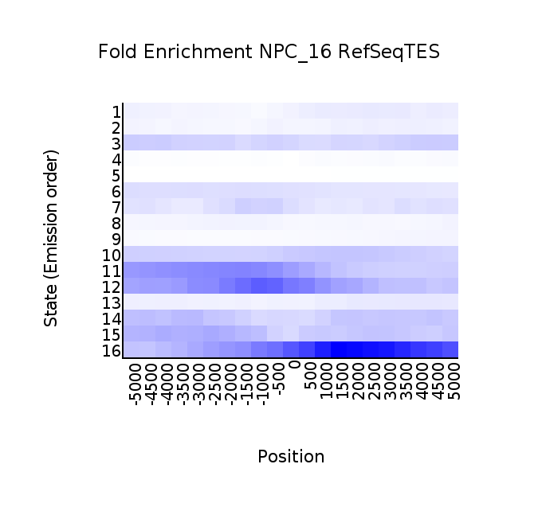

<center><h1>ChromHMM Report</h1></center>
Input Directory: binary_file_bin500/<br>
Output Directory: model_output_16_bin500_new<br>
Number of States: 16<br>
Assembly: mm9<br>
Full ChromHMM command: LearnModel -b 500 binary_file_bin500/ model_output_16_bin500_new 16 mm9
<h1>Model Parameters</h1>
<br>
<li><a href="emissions_16.svg">Emission Parameter SVG File</a><br>
<li><a href="emissions_16.txt">Emission Parameter Tab-Delimited Text File</a><br>
<br>
<li><a href="transitions_16.svg">Transition Parameter SVG File</a><br>
<li><a href="transitions_16.txt">Transition Parameter Tab-Delimited Text File</a><br><br>
<li><a href="model_16.txt">All Model Parameters Tab-Delimited Text File</a> <br>
<h1>Genome Segmentation Files</h1>
<li><a href="NPC_16_segments.bed">NPC_16 Segmentation File (Four Column Bed File)</a><br>
<br>
Custom Tracks for loading into the <a href="http://genome.ucsc.edu">UCSC Genome Browser</a>:<br>
<li><a href=NPC_16_dense.bed>NPC_16 Browser Custom Track Dense File</a> <br>
<li><a href=NPC_16_expanded.bed>NPC_16 Browser Custom Track Expanded File</a><br>
<h1>State Enrichments</h1>
<h2>NPC_16 Enrichments</h2>
 <br>
<li><a href="NPC_16_overlap.svg">NPC_16 Overlap Enrichment SVG File</a><br>
<li><a href="NPC_16_overlap.txt">NPC_16 Overlap Enrichment Tab-Delimited Text File</a><br>
 <br>
<li><a href="NPC_16_RefSeqTSS_neighborhood.svg">NPC_16_RefSeqTSS_neighborhood Enrichment SVG File</a><br>
<li><a href="NPC_16_RefSeqTSS_neighborhood.txt">NPC_16_RefSeqTSS_neighborhood Enrichment Tab-Delimited Text File</a><br>
 <br>
<li><a href="NPC_16_RefSeqTES_neighborhood.svg">NPC_16_RefSeqTES_neighborhood Enrichment SVG File</a><br>
<li><a href="NPC_16_RefSeqTES_neighborhood.txt">NPC_16_RefSeqTES_neighborhood Enrichment Tab-Delimited Text File</a><br>
